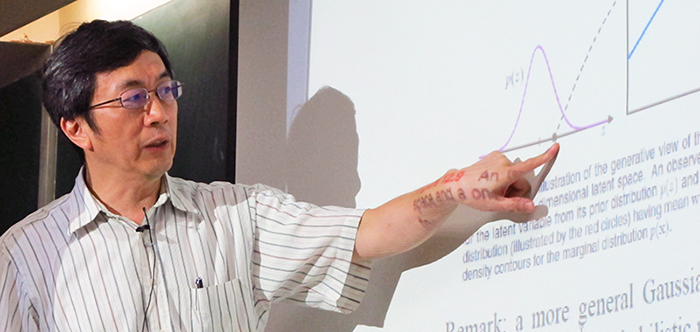

Advisor
Prof. Sheng-Jyh Wang (王聖智)

Prof. Sheng-Jyh Wang (王聖智)
國立陽明交通大學電子工程學系 特聘教授
Distinguished Professor, Department of Electronics Engineering
National Yang Ming Chiao Tung University (NYCU), Taiwan
Research Fields
- Computer Vision
- Machine Learning
- Image Processing
- Signal Processing
Education
- B.S., National Chiao Tung University, Taiwan (Electronics Engineering), 1984
- M.S., Stanford University, USA (Electrical Engineering), 1989
- Ph.D., Stanford University, USA (Electrical Engineering), 1994
Contact Information
- Office: Rm. 649, Engineering Building IV, No.1001 Daxue Road, Hsinchu, Taiwan 300, ROC
- Tel: +886-3-5731878
- Email: shengjyh@nycu.edu.tw
Experiences
- 1994/9 ~ 1995/7 Research Associate, Stanford University, US
- 1995/8 ~ 2005/7 Associate Professor, Department of Electronics Engineering, NCTU, Taiwan
- 2005/8 ~ present Professor, Department of Electronics Engineering, NCTU, Taiwan
- 2008/8 ~ 2009/7 Director, EECS International Graduate Program, NCTU, Taiwan
- 2010/2 ~ present NCTU Distinguished Professor (交通大學特聘教授), NCTU, Taiwan
- 2010/6 ~ present NCTU Distinguished Teacher (交通大學榮譽教學教師), NCTU, Taiwan
- 2014/8 ~ 2015/7 Visiting Scholar, Department of Statistics, Stanford University, USA
- 2018/2 ~ 2020/5 Senior Director, Innovative Vision R&D, Aeolus Robotics
- 2020/6 ~ Present Chief AI Scientist, Aeolus Robotics
- 2022/8 ~ Present NYCU Distinguished Professor (陽明交通大學特聘教授), NYCU, Taiwan
Publications
Journal Papers
- Syu, Jia-Hao, Sheng-Jyh Wang, and Li-Chun Wang. “Hierarchical image segmentation based on iterative contraction and merging.” IEEE Transactions on Image Processing5 (2017): 2246-2260.
- Jia-Hao Syu, Sheng-Jyh Wang, and Li-Chun Wang, “Hierarchical Image Segmentation based on Iterative Contraction and Merging,” to appear on IEEE Transactions on Image Processing, 2017.
- Chen-Yu Tseng, Sheng-Jyh Wang, “Shape-from-Focus Depth Reconstruction with Spatial Consistency Model,” IEEE Transactions on Circuits and Systems for Video Technology, VOL. 24, NO. 12, pp. 2063-2076, December, 2014.
- Chen-Yu Tseng, Sheng-Jyh Wang, “Learning based Hierarchical Graph for Unsupervised Matting and Foreground Estimation,” IEEE Transactions on Image Processing, Vol. 23, No. 12, pp. 4941-4953, December, 2014.
- Ching-Chun Huang, Yu-Shu Tai, and Sheng-Jyh Wang, “Vacant Parking Space Detection Based on Plane-based Bayesian Hierarchical Framework”, IEEE Transactions on Circuits and Systems for Video Technology, VOL. 23, NO. 9, pp. 1598-1610, September, 2013.
- Tzu-Cheng Jen and Sheng-Jyh Wang, “Bayesian Structure-Preserving Image Contrast Enhancement and Its Simplification”, IEEE Transactions on Circuits and Systems for Video Technology, VOL. 22, Issue 6, pp. 831-843, June 2012.
- Ching-Chun Huang and Sheng-Jyh Wang, “A Bayeisan Hierarchical Framework for Multitarget Labeling and Correspondence with Ghost Suppression over Multicamera Surveillance System”, IEEE Transactions on Automation Science and Engineering VOL. 9, NO. 1, pp. 16-30, January 2012.
- Ching-Chun Huang and Sheng-Jyh Wang, “A Hierarchical Bayesian Generation Framework for Vacant Parking Space Detection,” IEEE Transactions on Circuits and Systems for Video Technology, VOL. 20, NO. 12, pp. 1770-1785, December 2010.
- I-Hsien Chen and Sheng-Jyh Wang, “An Efficient Approach for Dynamic Calibration of Multiple Cameras,” IEEE Transactions on Automation Science and Engineering, VOL. 6, NO. 1, pp. 187-194, Jan. 2009.
- Jia-Bin Huang, Yu-Cheng Tseng, Se-In Wu, and Sheng-Jyh Wang, “Information Preserving Color Transformation for Protanopia and Deuteranopia,” IEEE Signal Processing Letters, VOL. 14, NO. 10, pp. 711-714, October 2007.
- I-Hsien Chen and Sheng-Jyh Wang, “An Efficient Approach for the Calibration of Multiple PTZ Cameras,” IEEE Transactions on Automation Science and Engineering, Vol. 4, NO. 2, pp. 286-293, April 2007.
- H. C. Chen and S. J. Wang, “Visible Color Difference Based Quantitative Evaluation of Color Segmentation,” IEE Proceedings – Vision, Image, and Signal Processing, Vol. 153, Issue 5, pp. 598-609, Oct. 2006.
- S J. Wang, L C. Kuo, H H. Jong, and Z H. Wu, “Representing Images Using Points on Image Surfaces,” IEEE Transactions on Image Processing, Vol. 14, NO. 8, pp. 1043-1056, August 2005.
- L.C. Kuo and S.J. Wang, “An Edge and Corner Detector with Its Application in Image Segmentation,” WSEAS Transactions on Information Science and Applications, Vol. 1, pp. 1534-1539, 2004.
- H.C. Chen, W.J. Chien and S.J. Wang, “Contrast-Based Color Image Segmentation,” IEEE Signal Processing Letters, vol. 11, no.7, pp.641-644, July 2004.
- Y. M. Yeh, H.C. Chiang, and S.J. Wang, “Digital Camcorder Image Stabilizer Based on Gray-Coded Bit-Plane Block Matching”, SPIE Optical Engineering, Volume 40, NO 10, pp. 2172-2178, Oct. 2001.
- W.C. Tsai and S.J. Wang, “Two Systolic Architectures for Multiplication in GF(2m)”, IEE Proceedings – Computers and Digital Techniques, Volume: 147 Issue: 6, pp. 375-382, Nov. 2000.
- W.C. Tsai, C.B. Shung, and S.J. Wang, “Two Systolic Architectures for Modular Multiplication”, IEEE Transactions on Very Large Scale Integration Systems, Vol. 8, Issue 1, pp. 103-107, Feb. 2000.
Conference Papers
- Lee, Kuei-Tso, and Sheng-Jyh Wang. “Bayesian Opponent Exploitation by Inferring the Opponent’s Policy Selection Pattern.” 2022 IEEE Conference on Games (CoG). IEEE, 2022.
- Syu, Jia-Hao, et al. “Semantic segmentation of indoor-scene RGB-D images based on iterative contraction and merging.” Image and Signal Processing: 8th International Conference, ICISP 2018, Cherbourg, France, July 2-4, 2018, Proceedings 8. Springer International Publishing, 2018.
- Syu, Jia-Hao, Sheng-Jyn Wang, and Li-Chun Wang. “Image Enhancement Based on Region-Based Contraction Process.” 2018 IEEE International Conference on Consumer Electronics-Taiwan (ICCE-TW). IEEE, 2018.
- Yang, Tzu-Hao, Jia-Hao Syu, and Sheng-Jyh Wang. “Semantic segmentation based on iterative contraction and merging.” 2017 IEEE International Conference on Image Processing (ICIP). IEEE, 2017.
- Syu, Jia-Hao, Sheng-Jyh Wang, and Li-Chun Wang. “A patch-based contraction process for the improvement of image matting.” 2017 International Symposium on Intelligent Signal Processing and Communication Systems (ISPACS). IEEE, 2017.
- Yeh, Hao-Wei, et al. “Unsupervised hierarchical image segmentation based on Bayesian sequential partitioning.” 2015 IEEE International Conference on Image Processing (ICIP). IEEE, 2015.
- Hao-Wei Yeh, Chen-Yu Tseng, Tung-Yu Wu, and Sheng-Jyh Wang, “Unsupervised Hierarchical Image Segmentation Based on Bayesian Sequential Partitioning”, in Proceedings of IEEE International Conference on Image Processing (ICIP), Sep., 2015.
- Hsin-Min Cheng, Chen-Yu Tseng, Cheng-Ho Hsin, and Sheng-Jyh Wang, “Single-image 3-D Depth Estimation for Urban Scenes”, in IEEE International Conference on Image Processing (ICIP), 2013.
- Chen-Yu Tseng and Sheng-Jyh Wang, “Automatic 3-D depth recovery from a single unban-scene image,” Proc. Visual Communications and Image Processing (VCIP), San Diego, USA, Nov. 2012.
- Chen-Yu Tseng and Sheng-Jyh Wang, “Maximum-A-Posteriori Estimation for Global Spatial Coherence Recovery Based on Matting Laplacian,” in Proceedings of IEEE International Conference on Image Processing, Sep. 2012.
- Chen-Yu Tseng and Sheng-Jyh Wang, “A Cell-Based Matting Laplacian for Contrast Enhancement,” in Proceedings of IEEE International Conference on Image Processing, Sep., 2012.
- Chingchun Huang, Yu-Shu Dai and Sheng-Jyh Wang , “A Surface-based Vacant Space Detection for an Intelligent Parking Lot,” in Proceedings of IEEE International Conference on ITS Telecommunications (ITST), Sep , 2012.
- Ching-chun Huang, Jay Chou, Jia-hau Shiu, and Sheng-Jyh Wang, “Multi-view Face Detection Based on Position Estimation over Multi-camera Surveillance System,” in Proceedings of IS&T/SPIE Electronic Imaging, 2012.
- Ching-Chun Huang, Jay Chou, Jia-hau Shiu and Sheng-Jyh Wang, “Multi-View Face Detection Over Multi-Camera Surveillance System,” in Proceedings of Computer Vision, Graphics, and Image Processing, Taiwan, Aug, 2011.
- Ching-Chun Huang and Sheng-Jyh Wang, “A Cascaded Hierarchical Framework for Moving Object Detection and Tracking”, in Proceedings of IEEE International Conference on Image Processing, Sep., 2010.
- Tzu-Cheng Jen and Sheng-Jyh Wang, “An Efficient Bayesian Framework for Image Enhancement with Spatial Consideration”, in Proceedings of IEEE International Conference on Image Processing, Sep., 2010.
- Ching-Chun Huang, Wei-Chen Chiu, Sheng-Jyh Wang, and Jen-Hui Chuang, “Probabilistic Modeling of Dynamic Traffic Flow across Non-overlapping Camera Views”, International Conference on Pattern Recognition, Istanbul, 2010.
- Chen-Yu Tseng, Sheng-Jyh Wang, Chir-Weei Chang, Po-Chang Chen, Chuan-Chung Chang, and Yi-An Chen, “Digital Image Restoration for Phase-Coded Imaging Systems”, SPIE Europe, Brussels, 2010.
- Chen-Yu Tseng, Sheng-Jyh Wang, and Yi-An Chen, “Image Enhancement Based on Gamma Map Processing”, SPIE Europe, Brussels, 2010.
- Wen-Chung Huang, Sheng-Jyh Wang, and Cheng-Ho Hsin, “Visual Saliency Detection Based on Feature-Pair Distributions”, in Proc. Computer Vision, Graphics, and Image Processing, Taiwan, 2009.
- Wei-Chen Chiu, Ching-Chun Huang, Jen-Hui Chuang, and Sheng-Jyh Wang, “Probabilistic Modeling of Dynamic Traffic Flow between Non-overlapping FOVs”, in Proc. Computer Vision, Graphics, and Image Processing, Taiwan, 2009.
- Ching-Chun Huang and Sheng-Jyh Wang, “Moving Targets Labeling and Correspondence over Multi-Camera Surveillance System Based on Markov Network”, in Proceeding of 2009 IEEE International Conference on Multimedia and Expo, June 2009.
- Jia-Bin Huang, Chu-Song Chen, Tzu-Cheng Jen, and Sheng-Jyh Wang, “Image Re-colorization for the Colorblind”, in Proceedings of IEEE International Conference on Acoustics, Speech, and Signal Processing, 2009.
- Ching-Hui Chen, Carrson C. Fung, and Sheng-Jyh Wang, “Packetized Video Transmission for OFDM Wireless Systems with Dynamic Ordered Subcarrier Selection Algorithm”, in Proceedings of IEEE International Conference on Acoustics, Speech, and Signal Processing, 2009.
- Tzu-Cheng Jen and Sheng-Jyh Wang,” Image Enhancement Based on Quadratic Programming,” in Proceedings of IEEE International Conference on Image Processing, Oct. 2008.
- Ching-Chun Huang and Sheng-Jyh Wang, “A Monte Carlo Based Framework for Multi-Target Detection and Tracking Over Multi-Camera Surveillance System,” in Proceedings of the 10th European Conference on Computer Vision (ECCV) Workshop on Multi-camera and Multi-modal Sensor Fusion Algorithms and Applications, Marseille, France, Oct. 2008.
- Po-Kai Fan and Sheng-Jyh Wang, “Coordination of PTZ cameras Based On Particle Swarm Optimization for cooperative video surveillance,” in Proc. Computer Vision, Graphics, and Image Processing, Taiwan, 2008.
- Ching-Chun Hsiao and Sheng-Jyh Wang, “Model-Based pose estimation for multi-camera motion capture system,” in Proc. Computer Vision, Graphics, and Image Processing, Taiwan, 2008.
- Ching-Chun Huang, Sheng-Jyh Wang, Yao-Jen Chang, and Tsuhan Chen, “A Bayesian Hierarchical Detection Framework for Parking Space Detection,” in Proceedings of IEEE International Conference on Acoustics, Speech, and Signal Processing, 2008.
- Chen-Yu Tseng and Sheng-Jyh Wang, “A Novel Concealment for Whole-Frame Losses and Error Resilience Based on Motion Vector Correction”, in Proc. of Workshop on Consumer Electronics and Signal Processing, Taiwan, Nov. 2007.
- Yu-Ching Wang and Sheng-Jyh Wang, “Moving Objects Tracking and Correspondence over Multi-Camera Surveillance System”, in Proc. of Workshop on Consumer Electronics and Signal Processing, Taiwan, Nov. 2007.
- I-Hsien Chen and Sheng-Jyh Wang, “An Efficient Approach for Dynamic Calibration of Multiple PTZ Cameras,” in Proc. Computer Vision, Graphics, and Image Processing, Taiwan, Aug. 2007.
- Tsung-Han Chiang and Sheng-Jyh Wang, “A Novel Macroblock-Layer Rate-Distortion Model for Rate Control Scheme of H.264/AVC,” in Proceedings of IEEE Pacific-Rim Symposium on Image and Video Technology, Taiwan, December 2006.
- Shao-Yu Wang and Sheng-Jyh Wang, “Parameter Selection of Robust Fine Granularity Scalable Video Coding Over MPEG-4,” in Proceedings of IEEE Pacific-Rim Symposium on Image and Video Technology, Taiwan, December 2006.
- Tzu-Cheng Jen and Sheng-Jyh Wang, “Generalized Histogram Equalization Based on Local Characteristics,” in Proceedings of IEEE International Conference on Image Processing, Sep., 2006.
- Jia-Bin Huang, Yu-Cheng Tzeng, Se-In Wu, and Sheng-Jyh Wang, “Information Preserving Color Transformation for Protanopia and Deuteranopia,” in Proc. Computer Vision, Graphics, and Image Processing, Taiwan, Aug. 2006.
- Tsung-Han Chiang and Sheng-Jyh Wang, “A Novel Macroblock-Layer Rate-Distortion Model,” in Proc. Computer Vision, Graphics, and Image Processing, Taiwan, Aug. 2006.
- Tsung-Han Wu and Sheng-Jyh Wang, “Spatial Resolution Enhancement For Compressed Videos,” in Proc. Computer Vision, Graphics, and Image Processing, Taiwan, Aug. 2006.
- Wen-Han Yao and Sheng-Jyh Wang, “Mean-Shift Object Tracking Based On A Multi-blob Model,” in Proc. Computer Vision, Graphics, and Image Processing, Taiwan, Aug. 2006.
- Meng-Hsiu Tsai and Sheng-Jyh Wang, “A New Region Tracking model for Visual surveillance systems,” in Proc. Computer Vision, Graphics, and Image Processing, Taiwan, Aug. 2006.
- L.T. Fang, H.C. Chen, I. C. Yin, S. J. Wang, C. H. Wen, and C. H. Kuo, “Automatic Mura Detection System for Liquid Crystal Display Panels,” IS&T/SPIE 18th Annual Symposium Electronic Imaging, San Jose, California, USA, 15–19 January 2006.
- C. Chen, C. Tseng, C. Hung, I. Yin, S. Wang, “ Combinational AE-AF system with fuzzy climbing search servo,” IS&T/SPIE 18th Annual Symposium Electronic Imaging, San Jose, California, USA, 15–19 January 2006.
- I. H. Chen and S J. Wang, “A Vision-Based Approach to Extracting the Tilt Angle and Altitude of a PTZ Camera,” IS&T/SPIE 18th Annual Symposium Electronic Imaging, San Jose, California, USA, 15–19 January 2006.
- I. H. Chen and S J. Wang, “Efficient Vision-Based Calibration for Visual Surveillance Systems with Multiple PTZ Cameras,” in Proceeding of IEEE International Conference on Computer Vision Systems, Jan. 5-7, 2006.
- S H. Tao and S J. Wang, “Quadro-Field-Based Error Resilience and Error Concealment Techniques for H.264 Video Coding,” in Proc. of Workshop on Consumer Electronics and Signal Processing, Yunlin, Taiwan, Nov. 2005.
- T C. Jen and S J. Wang, “Generalized Histogram Equalization Based on Local Characteristics,” in Proc. of Workshop on Consumer Electronics and Signal Processing, Yunlin, Taiwan, Nov. 2005.
- L T. Fang, H C. Chen and S J. Wang,” Automatic Mura Detection System for Liquid Crystal Display Panels,” in Proc. Computer Vision, Graphics, and Image Processing, Taipei, Taiwan, Aug. 2005.
- I. H. Chen and S J. Wang, “A Vision-Based Approach to Extracting the Tilt Angle of a PTZ Camera,” in Proc. Computer Vision, Graphics, and Image Processing, Taipei, Taiwan, Aug. 2005.
- T.C. Jen, Brian Hsieh, and S.J. Wang, “Image Contrast Enhancement Based on Intensity-Pair Distribution”, in Proceedings of IEEE International Conference on Image Processing, Genova, Sep., 2005.
- L.C. Kuo and S.J. Wang, “A Flexible Architecture for Feature-Based Image Editing,” in Proceedings of IEEE International Conference on Acoustics, Speech, and Signal Processing, Vol. 2, pp. 1177-1180, March 2005.
- L.C. Kuo and S.J. Wang, “A Feature-Based Scalable Codec for Image Compression,” in the 19th International Conference on Advanced Information Networking and Application, Vol. 2, pp. 87-90, March 2005.
- H.C. Chen, L.T. Fang, L. Lee, C.H. Wen, S.Y. Cheng, and S.J. Wang, “LOG Filter Based Inspection of Cluster Mura and Vertical Band Mura on Liquid Crystal Displays” Proceedings of SPIE, Vol. 5679, Jan. 2005.
- L.C. Kuo, T. Chiang, and S.J. Wang, ” An Adaptive Macro-Block Based Scheme for Temporal Prediction Control in Fine Granularity Scalability Coding,” in Workshop on Consumer Electronics and Signal Processing, pp. 7-13, Nov. 2004.
- L.C. Kuo and S.J. Wang, “A New Operator for Edge and Corner Detection,” in Workshop on Consumer Electronics and Signal Processing, pp. 464-469, Nov. 2004.
- L.C. Kuo and S.J. Wang, “An Edge and Corner Detector with Its Application in Image Segmentation,” in 5th WSEAS International Conference on Automation and Information, Venice, Italy, Nov. 2004.
- L C. Kuo and S J. Wang,”A Versatile Framework for Feature-Based Image Enhancement and Editing,” in Proc. Computer Vision, Graphics, and Image Processing, Hualien, Taiwan, Aug. 2004.
- C Y. Cheng, H C. Chen, S H. Tao and S J. Wang,”Field-Based Error Resilience and Error Concealment Techniques on Scalable H.264,” in Proc. Computer Vision, Graphics, and Image Processing, Hualien, Taiwan, Aug. 2004.
- H C. Chen, L T. Fang, Louis Lee, C H. Wen, S Y. Cheng and S J. Wang, “Log Filters Based Detection of Cluster Mura and Vertical−Band Mura on Liquid Crystal Displays,” in Proc. Computer Vision, Graphics, and Image Processing, Hualien, Taiwan, Aug. 2004.
- H.C. Chen and S.J. Wang, “The Use of Visible Color Difference in The Quantitative Evaluation of Color Image Segmentation,” in IEEE Proc., Intl. Conf. on Acoust., Speech, and Signal Processing, Montreal, Quebec, Canada, May 2004.
- C. J. Li, and S. J. Wang, “Detection and Tracking of a Single Deformable Object on an Active Surveillance Camera,” in Proc. Computer Vision, Graphics, and Image Processing, Kinmen, Taiwan, Aug. 2003.
- C. Y. Wu, S. M. Lee, C. H. Wen, C. Y. Chen, W. H. Chen, and S. J. Wang, “Multi-spectral Image
Acquisition System for Color Spectrum Reproduction,” in Proc.
Computer Vision, Graphics, and Image Processing, Kinmen, Taiwan, Aug. 2003. - Y. M. Chen, and S. J. Wang, “A New Video Encryption Technique Based on Modification of VLC Tables, Disarrangement of RLC indices, Randomized Bit- Flipping, and Randomized Bit-Insertion,” in Proc. Computer Vision, Graphics, and Image Processing, Kinmen, Taiwan, Aug. 2003.
- S.J. Chen, W.J. Chien, and S.J. Wang, “Contrast Based Color Segmentation with Adaptive Thresholds”, Proceedings of IEEE International Conference on Image Processing, Vol 2. pp. 73~76, 2002.
- S.J. Chen, W.J. Chien, and S.J. Wang, “A New Color Image Segmentation Algorithm based on Directional Data Trends”, Computer Vision, Graphics, and Image Processing, 2001.
- J.T. Ko, and S.J. Wang, 2000, “A Coarse-to-Fine Approach for the Generation and Tracking of Mesh Objects from a Natural Image Sequence”, Proceedings of IEEE International Conference on Image Processing, Vol. 2, pp. 883-886, 2000.
- W.C. Tsai, and S.J. Wang, 2000, “A Systolic Architecture for Elliptic Curve Cryptosystems”, Proceedings of the 5th International Conference on Signal Processing, Vol. 1, pp. 591-597, 2000.
- G.R. Chen, Y.M. Yeh, S.J. Wang, and H.C. Chiang, 2000, “A Novel Structure for Digital Image Stabilizer”, Proceedings of IEEE Asia-Pacific Conference on Circuits and Systems, pp. 101-104, 2000.
- Y.M. Yeh, S.J. Wang, and H.C. Chiang, 2000, “A Digital Camcorder Image Stabilizer Based on Gray Coded Bit-Plane Block Matching”, Proceedings of SPIE, Vol. 4080, pp. 112-120, 2000.
- J.T. Ko, B.W. Shyr, and S.J. Wang, 2000, “Generation and Tracking of Mesh Objects in Image Sequences”, Proceedings of SPIE, Vol. 3974, 2000.
- T.Y.Chao, S.J. Wang, and H.M. Hang, 2000, “Stereoscopic Correspondence by Applying Physical Constraints and Statistical Observations to Dissimularity Map”, Proceedings of SPIE, Vol. 3957, pp. 78-89, 2000.
- H.H. Jong, Z.H. Wu, S.J. Wang, 1999, “The Extraction and Linking of Brink Points in an Image”, Proceedings of IEEE International Conference on Image Processing, Vol. 2, pp. 696-699, 1999.
- B.W. Shyr and S.J. Wang, 1999, “The Generation and Tracking of Mesh Objects in Image Sequence”, Computer Vision, Graphics, and Image Processing, pp. 490 – 495, 1999.
- C.C. Lee, G.R. Chen, and S.J. Wang, 1999, “Edge Enhancement Based on Multiscale Methods”, Computer Vision, Graphics, and Image Processing, pp. 406 – 413, 1999.
- Y.C. Peng and S.J. Wang, 1999, “Multipass Stereo Matching Algorithm Using High-Curvature Points on Image Profiles”, Proceeding of SPIE, Vol. 3639, pp. 219-230, 1999.
- Y.C. Peng and S.J. Wang, “The Correspondence of Stereoscopic Images: A Multi-pass Stereo Matching Algorithm”, Computer Vision, Graphics, and Image Processing, 1998.
- H.H. Jong, Z.H. Wu, and S.J. Wang, 1998, “The Extraction, Linking, and Representation of High-Curvature Points on Image Surface”, Computer Vision, Graphics, and Image Processing, 1998.
- T.Y.Chao, H.M. Hang, and S.J. Wang, 1998, “Synthesizing New Views from a Pair of Stereo Images”, Proceedings of SPIE, Vol. 3295, 1998.
- S.J. Wang, J.H. Twu, and H.H. Liu, 1998, “The Representation of Image Surfaces by Using Curvature Information”, Proceeding of SPIE, Vol. 3308, 1998.
- S.S. Liu, J.H. Twu, and S.J. Wang, 1997, “Image Representation Using Curvature Information in Intensity Profiles”, Proceedings of IEEE International Conference on Image Processing, Vol. 2, pp. 720-723, 1997.
- J.H. Twu, H.H. Liu, and S.J. Wang, 1997, “The Representation of Image Surfaces by Using Curvature Information”, Computer Vision, Graphics, and Image Processing, 1997.
- S.J. Wang and T.O. Binford, 1995, “Detection, Estimation, and Aggregation of Three Major Types of Discontinuities in Image Surfaces”, Proceedings of 1995 ARPA Image Understanding Workshop.
- S.J. Wang and T.O. Binford, 1994, “Generic, Model-Based Estimation and Detection of Discontinuities in Image Surfaces”, Proceedings of 1994 ARPA Image Understanding Workshop, pp.1443-1449.
- S.J. Wang and T.O. Binford, 1994, “Model-Based Edgel Aggregration”, Proceedings of 1994 ARPA Image Understanding Workshop, pp.1589-1593.
- S.J. Wang and T.O. Binford, 1993, “Local Step Edge Estimation: A New Algorithm, Statistical Model and Performance Evaluation”, Proceedings of 1993 ARPA Image Understanding Workshop, pp.1063-1070.
Monograph
- Ph.D, Dissertation: “Image Segmentation: Generic Modeling, Detection, and Estimation of Discontinuities in Image Surfaces”, 1994
Patents
| 專利編號 | 國別 | 取證年度 | 專利名稱 | 發明人 | 有效期限 |
|---|---|---|---|---|---|
| I268453 | 台灣 | 2006 | 影像處理方法 | 王聖智,任慈澄,謝曜任 | 2006/12/11 ~ 2025/1/30 |
| I287760 | 台灣 | 2007 | 影像對比加強方法 | 王聖智,任慈澄,謝曜任 | 2007/10/1 ~ 2025/1/27 |
| I307484 | 台灣 | 2009 | 影像擷取裝置之校正系統及其方法 | 王聖智, 陳宜賢 |
2009/3/11 ~ 2026/2/20 |
| I349893 | 台灣 | 2011 | 用於影像擷取裝置的校正方法 | 王聖智, 陳宜賢 |
2011/10/1 ~ 2028/2/18 |
| US 8,150,143 B2 | 美國 | 2012 | DYNAMIC CALIBRATION METHOD FOR SINGLE AND MULTIPLE VEDIO CAPTURE DEVICES | 王聖智, 陳宜賢 |
2008/4/9 ~ 2031/1/30 |
| US 8,270,706 B2 | 美國 | 2012 | DYNAMIC CALIBRATION METHOD FOR SINGLE AND MULTIPLE VIDEO CAPTURE DEVICES | 王聖智, 陳宜賢 |
2008/4/9 ~ 2028/4/9 |
| I492188 | 台灣 | 2015 | 利用多攝影機自動偵測與追蹤多目標的方法及系統 | 王聖智, 黃敬群 |
2015/7/11 ~ 2028/12/24 |
| US 8,995,712 B2 | 美國 | 2015 | METHOD FOR AUTOMATIC DETECTION AND TRACKING OF MULTIPLE TARGETS WITH MULTIPLE CAMERAS AND SYSTEM THEREFOR | 王聖智, 黃敬群 |
2015/3/31 ~ 2034/2/23 |
Technical Reports and Others
- 碟王科技開發股份有限公司技術報告 “適用於大型觸控面板之手勢辨識技術”, 2012.
- 碟王科技開發股份有限公司技術報告 “以視訊為基礎之桌上型多點觸控面板”, 2011.
- 友達光電技術報告 “彩色影像之對比、銳利度加強及色彩空間轉換連續性改善之研究”, 2010.
- 碟王科技開發股份有限公司技術報告 “以視訊為基礎之多點式觸控面板”, 2009.
- 中華民國台灣薄膜電晶體液晶顯示器產業協會技術報告 “顯示器影像品質評價最佳化演算法設計（1）”, 2008.
- 友達光電技術報告“彩色影像之膚色加強，雜訊壓抑及色域處理技術之研究”, 2007.
- 中華民國台灣薄膜電晶體液晶顯示器產業協會技術報告 “顯示器品質測試之智慧型影像處理研究(2)”, 2007.
- 友達光電技術報告 “彩色影像之記憶色加強，暗部加強及雜訊壓抑技術之研究”, 2006.
- 中華民國台灣薄膜電晶體液晶顯示器產業協會技術報告 “顯示器品質測試之智慧型影像處理研究”, 2006.
- 中華民國台灣薄膜電晶體液晶顯示器產業協會技術報告 “快速Mura 影像處理法則”, 2005.
- 友達光電技術報告 “液晶顯示器之對比加強、銳利度加強、及色溫調整技術之研究”, 2004.
- 中華民國台灣薄膜電晶體液晶顯示器產業協會技術報告 “視覺化影像強度區分法則”, 2004.
- 工研院技術報告 “自動影像分割歸類演算法研究”, 2001.
- 工研院技術報告 “彩色影像合成暨防拷”, 2000.
- 工研院技術報告 “2D/3D Conversion (二)”, 1998.
- 工研院技術報告 “2D/3D Conversion”, 1997